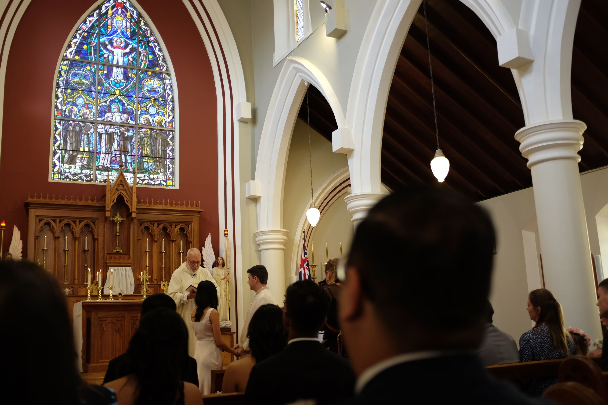
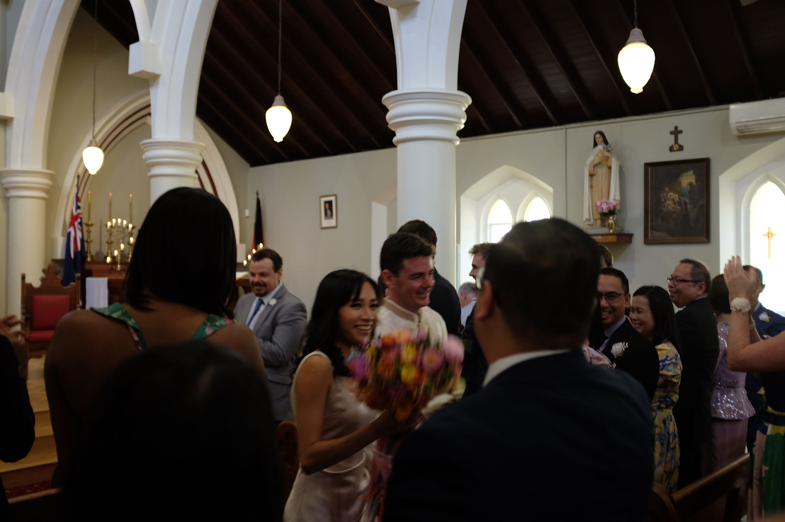
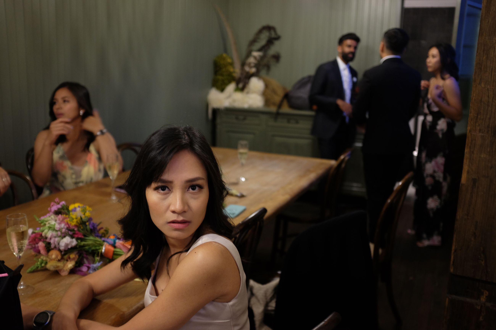
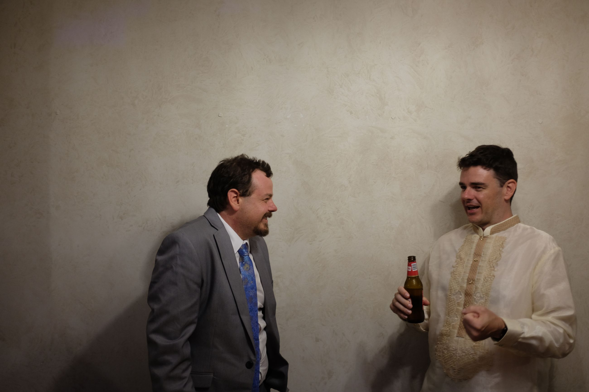
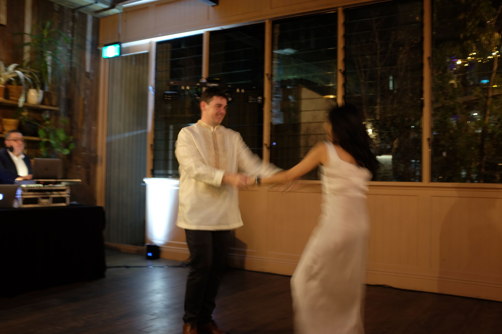

Australia. Finally set foot on this continent. Sydney reminds me of a mix of London and San Francisco. The homes look British, tucked into hedges with some old brick. The roads are like San Francisco's width, which is a smaller big road (or, a bigger small road). The rows of shoppes stacked closely to each other -- both British à la every high street in the countryside, and San Francisco à la Painted Ladies or every style of house there. The distance between neighbourhoods is nearly similar to that of San Francisco, but the central business area is like a mini Charing Cross (the train stations were also British-ish). It flows between both styles effortlessly, and having lived in both cities, it is precisely this in-between that made it rather unremarkable to me. But, some friends found it spectacular.
Most remarkable was the food. And it was not the cuisine itself, but the quality of food. Fresh breads and produce that just felt healthier than the greasy spoons of London or the heavy chowders of San Francisco.
One night stands out to me in particular. A couple of colleagues decide to go lawn bowling, so we head to Erskineville. If you head to the inner west of Syndey, the neighbourhoods get more diverse at a shorter distance travelled. Erskineville apparently has the highest density of lesbians and young urban couples, of course fit for a day of lawn bowling. Australians apparently also have this thing called a meat raffle, which is exactly what it sounds like. Pounds of meat laid out in a foldable table for a raffle draw. We then ended up at the Imperial Bar, which is where Priscilla, Queen of the Desert was filmed. Probably one of the more random nights I've had, but memorable.
The wedding -- the reason we were in Australia -- was very religious with a tinge of Filipino tradition. The priest got up, delivered a lengthy sermon, something about man lying with a wife, and then proceeded with Filipino traditions. First step, drape a veil over the bride and room. Second, twist once on a large beaded necklace to form an infinity sign, and hang over the neck of the bride and room. Third, take two candles, lit, and light one candle on stage to signify unity. There was a whole song and dance about the rehearsal for it, but it finished smoothly in the end. Then, a communion (for those who are Catholic, of course), and then a short photo session.
 
At night, we went to some wedding grounds for some dinner and laughter and, of course, dancing. All in all, a fun enough night. The Australian's do not get as unhinged as the British, I'll say. They love a good dance and a drink, but do not cross that line, a line when crossed is a signal to go home since it's about to get unhinged.
  
Sydney gave me a lot of that vibe. There were some really kooky, local things that were foreign to me, yet some parts that felt like California. I couldn't quite place why I was so nonplussed about it. It's so familiar, but not just quite so familiar. Muted, in a way. Maybe... that's just... culture?